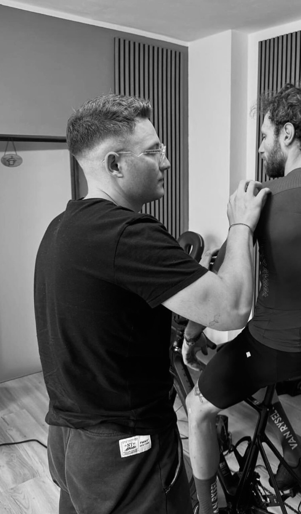

Mattia Pezzarini
Laureato in Scienze Motorie nel 2022, sono specializzato in Chinesiologia, Biomeccanica applicata al ciclismo e Preparazione Atletica. Il mio lavoro spazia dall'ottimizzazione dell'assetto in sella e la riatletizzazione post-infortunio (Return to Play) fino alla programmazione su misura dell'allenamento.
Nel mio percorso ho avuto il privilegio di seguire diversi atleti di alto livello, tra cui Stefano Viezzi, laureatosi Campione del Mondo di Ciclocross. Il mio obiettivo è trasformare i dati biometrici e le valutazioni funzionali in strategie pratiche e scientifiche per far esprimere a ogni atleta il suo massimo potenziale.

Alex Cimenti
Laureato in Ingegneria Biomedica, Alex è un praticante attivo di Triathlon e da sempre un profondo appassionato di tutte le ultime innovazioni tecnologiche legate al mondo della bicicletta.
Nel laboratorio porta il rigore e la precisione dell'analisi ingegneristica: la sua formazione gli permette di interpretare i dati delle forze in gioco, la dinamica di pedalata e l'aerodinamica con un approccio altamente quantitativo. L'unione tra la conoscenza delle tecnologie biomediche d'avanguardia e la pratica diretta sul campo nelle discipline di endurance garantisce un'analisi analitica, moderna e cucita sulle reali esigenze del ciclista.
I Pilastri del Nostro Metodo
Competenza Multidisciplinare
Scienze Motorie e Ingegneria Biomedica unite per integrare fisiologia, preparazione atletica e dati strumentali.
Esperienza & Passione
Dalla preparazione per un titolo iridato fino alla pratica diretta del Triathlon, conosciamo cosa serve per fare la differenza.
Innovazione Continua
Sfruttiamo le ultime novità tecnologiche del settore per eliminare ogni approssimazione e creare protocolli su misura.
Vuoi valutare la tua posizione in sella o la tua preparazione?
Prenota un test o una prima visita presso lo studio di Nimis (UD).
Prenota una Valutazione